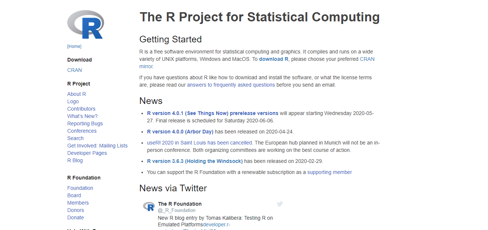
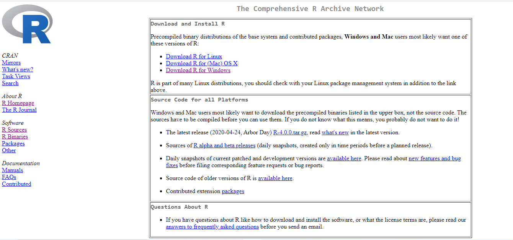
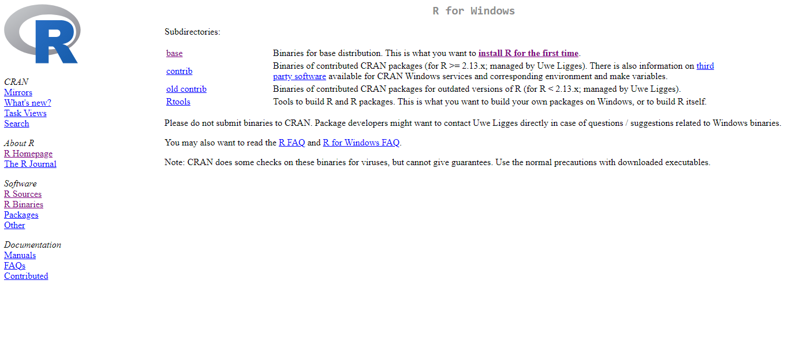
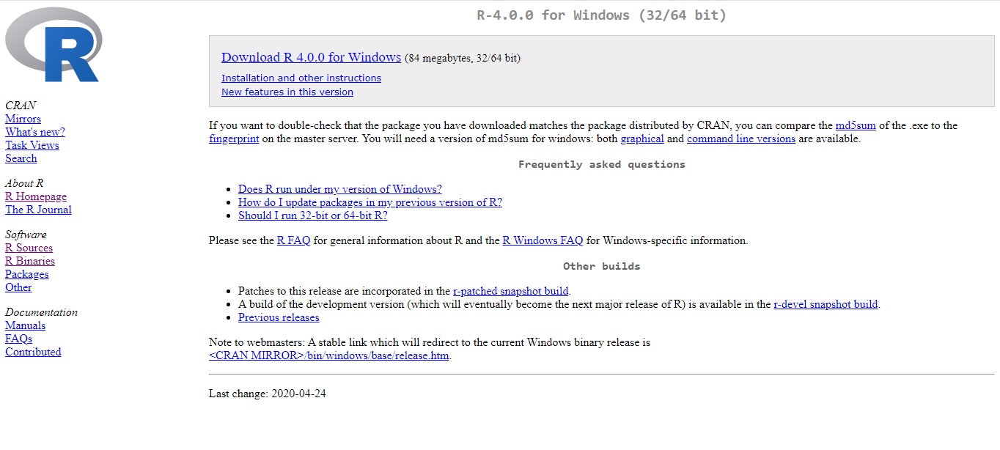
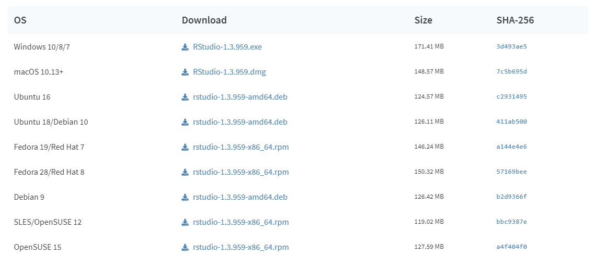

20 Análise conjunta
20.1 Análise conjunta com um fator qualitativo (DBC)
Na experimentação agrícola é comum a instalação de grupos de ensaios iguais, ou seja, com a mesma estrutura (delineamento, repetições e tratamentos iguais), entretanto, em anos e/ou locais distintos, visando a obtenção de conclusões mais abrangentes. Este tipo de análise é denominada análise conjunta de experimentos ou também conhecido como análise de grupos de experimentos.
Requisitos para análise de variância conjunta
Definir local (Ambiente) onde a pesquisa será conduzida, ou seja, diferentes localidades, anos diferentes de uma mesma localidade, anos e localidades distintas, etc. instalam-se os experimentos, o que geralmente são implantados em blocos casualziados, e após a coleta dos daddos, realizam-se todas às análises individuais, isto é, análise para cada ambiente de acordo com o delineamento estatístico utilizado.
Examina-se a seguir as grandezas dos \(QM_{Res}\), ou seja, se forem homogêneas (Quando a razão entre a maior e o menor \(QM_{Res}\) não for superior a mais de sete vezes) todos os ambientes poderão ser incluídos na análise conjunta sem restrições, do contrário, devem-se organizar subgrupos com QMresíduos homogêneos, sendo as análises conjuntas feitas para cada subgrupo.
| FV | G.L. | S.Q. | Q.M. | Fcalc |
|---|---|---|---|---|
| Tratamento | \(t-1\) | \(SQ_{Tratamento}\) | \(\frac{SQ_{Tratamento}}{t-1}\) | \(\frac{QM_{trat}}{QM_{T x A}}\) |
| Ambientes | \(a-1\) | \(SQ_{Ambiente}\) | \(\frac{SQ_{tratamento}}{a-1}\) | \(\frac{QM_{a}}{QM_{T x A}}\) |
| Interação T x A | \((t-1)(a-1)\) | \(SQ_{Interação}\) | \(\frac{SQ_{T x A}}{(t-1)(a-1)}\) | \(\frac{QM_{T x A}}{QM_{res}}\) |
| Resíduo médio | \(N'\) | \(SQ_{res}\) | \(\frac{SQ_{res}}{N}\) | |
| Total | \(at-1\) | \(SQ_{Total}\) |
20.2 Exemplo 1
Um experimento com três tratamentos (T1: 6cm; T2: 12cm e T3: 18cm) foi conduzido em delineamento em blocos casualizados com quatro repetições cada. Este mesmo experimento foi repetido duas vezes, totalizando 3 ensaios experimentais (fevereiro; Abril e Junho de 2018).
rm(list=ls())
resposta=c(20,30,30,20,80,75,75,60,85,80,80,90,20,10,10,20,
30,20,10,20,50,60,80,30,30,60,40,50,100,60,80,80,
70,90,80,80)
Comprimento=rep(rep(c(6,12,18),e=4),3); Comprimento=as.factor(Comprimento)
Tempo=rep(c(2,4,6),e=12); Tempo=as.factor(Tempo)
Repe=as.factor(c(rep(c(paste("R",1:4)),3),
rep(c(paste("R",1:4)),3),
rep(c(paste("R",1:4)),3)))
(dados=data.frame(Comprimento, Tempo, Repe, resposta))## Comprimento Tempo Repe resposta
## 1 6 2 R 1 20
## 2 6 2 R 2 30
## 3 6 2 R 3 30
## 4 6 2 R 4 20
## 5 12 2 R 1 80
## 6 12 2 R 2 75
## 7 12 2 R 3 75
## 8 12 2 R 4 60
## 9 18 2 R 1 85
## 10 18 2 R 2 80
## 11 18 2 R 3 80
## 12 18 2 R 4 90
## 13 6 4 R 1 20
## 14 6 4 R 2 10
## 15 6 4 R 3 10
## 16 6 4 R 4 20
## 17 12 4 R 1 30
## 18 12 4 R 2 20
## 19 12 4 R 3 10
## 20 12 4 R 4 20
## 21 18 4 R 1 50
## 22 18 4 R 2 60
## 23 18 4 R 3 80
## 24 18 4 R 4 30
## 25 6 6 R 1 30
## 26 6 6 R 2 60
## 27 6 6 R 3 40
## 28 6 6 R 4 50
## 29 12 6 R 1 100
## 30 12 6 R 2 60
## 31 12 6 R 3 80
## 32 12 6 R 4 80
## 33 18 6 R 1 70
## 34 18 6 R 2 90
## 35 18 6 R 3 80
## 36 18 6 R 4 8020.3 ANOVA individual
Antes de efetuar a análise conjunta, vamos analisar os dados em cada época (Como experimentos separados).
20.3.1 Tempo de 2 meses
## Analysis of Variance Table
##
## Response: resposta
## Df Sum Sq Mean Sq F value Pr(>F)
## Comprimento 2 7779.2 3889.6 69.1481 7.189e-05 ***
## Repe 3 56.3 18.8 0.3333 0.8022
## Residuals 6 337.5 56.3
## ---
## Signif. codes: 0 '***' 0.001 '**' 0.01 '*' 0.05 '.' 0.1 ' ' 1Como p-valor calculado (\(p=7.1893264\times 10^{-5}\)) é menor que o nível de significância adotado, rejeita-se \(H_0\). Logo, ao menos dois tratamentos diferem entre si.
20.3.2 Tempo de 4 meses
## Analysis of Variance Table
##
## Response: resposta
## Df Sum Sq Mean Sq F value Pr(>F)
## Comprimento 2 3800 1900.00 8.1429 0.01952 *
## Repe 3 200 66.67 0.2857 0.83436
## Residuals 6 1400 233.33
## ---
## Signif. codes: 0 '***' 0.001 '**' 0.01 '*' 0.05 '.' 0.1 ' ' 1Como p-valor calculado (\(p=0.0195152\)) é menor que o nível de significância adotado, rejeita-se \(H_0\). Logo, ao menos dois tratamentos diferem entre si.
20.3.3 Tempo de 6 meses
## Analysis of Variance Table
##
## Response: resposta
## Df Sum Sq Mean Sq F value Pr(>F)
## Comprimento 2 3266.7 1633.33 6.6818 0.02975 *
## Repe 3 33.3 11.11 0.0455 0.98589
## Residuals 6 1466.7 244.44
## ---
## Signif. codes: 0 '***' 0.001 '**' 0.01 '*' 0.05 '.' 0.1 ' ' 1Como p-valor calculado (\(p=0.0297504\)) é menor que o nível de significância adotado, rejeita-se \(H_0\). Logo, ao menos dois tratamentos diferem entre si.
20.4 Quadrado do resíduo médio
QMResiduo1<- anova(modelo)$`Mean Sq`[3]
QMResiduo2<- anova(modelo1)$`Mean Sq`[3]
QMResiduo3<- anova(modelo2)$`Mean Sq`[3]
QMResiduo<- c(QMResiduo1, QMResiduo2,
QMResiduo3)
max(QMResiduo)/min(QMResiduo) ## Deve ser menor que 7## [1] 4.345679## [1] 178.0093De acordo com Pimentel Gomes (2009), os ensaios em diversos locais podem ser agrupados em uma única análise desde que o quociente entre o maior e o menor quadrado médio do resíduo (QMRes) seja inferior a 7, caso contrário, pode-se considerar subgrupos de locais homogêneos, com quadrados médios residuais que satisfaçam o quociente, a fim de se construir tantas análises conjuntas quantos subgrupos criados
Referência: PIMENTEL GOMES, F. Curso de estatística experimental. 15 ed. Piracicaba: FEALQ, 2009. 451p.
20.5 Gráfico de interação

20.6 Análise de Variância conjunta
A análise de variância conjunta pode ser efetuada conforme os comandos abaixo:
Teste F para efeito da interação Local:Trat (Somente a interação é válida)
## Df Sum Sq Mean Sq F value Pr(>F)
## Tempo 2 9829 4915 27.609 3.28e-06 ***
## Comprimento 2 12304 6152 34.560 6.86e-07 ***
## Tempo:Repe 9 290 32 0.181 0.994
## Tempo:Comprimento 4 2542 635 3.570 0.026 *
## Residuals 18 3204 178
## ---
## Signif. codes: 0 '***' 0.001 '**' 0.01 '*' 0.05 '.' 0.1 ' ' 1Como p-valor calculado \(p=0.026\) é menor que o nível de significância adotado de (\(\alpha=0.05\)), pode-se concluir que há efeito de interação. Logo, temos que analisar como experimentos separados.
Teste F para efeito do Tratamento
mod=aov(resposta~Tempo+Tempo:Repe+Comprimento+Error(Tempo:(Repe+Comprimento)), data=dados)
summary(mod)##
## Error: Tempo:Repe
## Df Sum Sq Mean Sq
## Tempo 2 9829 4915
## Tempo:Repe 9 290 32
##
## Error: Tempo:Comprimento
## Df Sum Sq Mean Sq F value Pr(>F)
## Comprimento 2 12304 6152 9.682 0.0293 *
## Residuals 4 2542 635
## ---
## Signif. codes: 0 '***' 0.001 '**' 0.01 '*' 0.05 '.' 0.1 ' ' 1
##
## Error: Within
## Df Sum Sq Mean Sq F value Pr(>F)
## Residuals 18 3204 17820.7 Conferindo “Manualmente”
Quadro auxiliar com os totais da resposta em ensaios realizados em Londrina no delineamento inteiramente casualizado com três tratamentos (Comprimento de estaca) e quatro repetições em três épocas (T2,T4,T6)
| Comprimento | T2 | T4 | T6 | Total |
|---|---|---|---|---|
| 6 | 100 | 60 | 180 | 340 |
| 12 | 290 | 80 | 320 | 690 |
| 18 | 335 | 220 | 320 | 875 |
| Total | 725 | 360 | 820 | 1905 |
20.8 Grau de liberdade
Grau de liberdade do Comprimento
\(GL_{c}=c-1\)
\(GL_{comp}=3-1=2\)
Grau de liberdade do tempo
\(GL_{t}=t-1\)
\(GL_{tempo}=3-1=2\)
Grau de liberdade da interação
\(GL_{cXt}=(c-1)(t-1)\)
\(GL_{interação}=(3-1)(3-1)=4\)
Grau de liberdade do resíduo
\(GL_{resíduomédio}=N'\)
\(GL_{resíduo médio}=2*3(3)=18\)
\(N= c r t=36\)
20.8.1 Calculando soma de quadrados
\(SQ_{c}=\frac{\sum T_c^2}{rc}-\frac{(\sum T_c)^2}{N}\)
\(SQ_{comp}=\frac{340^2+690^2+875^2}{4*3}-\frac{1905^2}{36}=12.304,17\)
\(SQ_{t}=\frac{\sum T_t^2}{rt}-\frac{(\sum T_t)^2}{N}\)
\(SQ_{tempo}=\frac{725^2+360^2+820^2}{4*3}-\frac{1905^2}{36}=9.829,15\)
\(SQ_{c X t}=\frac{\sum T_{ct}^2}{r}-\frac{(\sum T_{ct})^2}{N}\)
\(SQ_{interação}=\frac{100^2+60^2+180^2+290^2+80^2+320^2+335^2+220^2+320^2}{4}-\frac{1905^2}{36}-12.304,17-9.829,15=2.541,63\)
20.8.2 Calculando quadrado médio
\(QM_{c}=\frac{SQ_{c}}{GL_c}\)
\(QM_{comp}=\frac{12.304,17}{2}=6.152,1\)
\(QM_{t}=\frac{SQ_{t}}{GL_t}\)
\(QM_{tempo}=\frac{9.829,15}{2}=4.914,6\)
\(QM_{c}=\frac{SQ_{cXt}}{GL_{interação}}\)
\(QM_{interação}=\frac{2.541,63}{4}=635,4075\)
\(QM_{c}=\frac{SQ_{resT2}+SQ_{resT4}+SQ_{resT6}}{t}\)
\(QM_{resíduo médio}=\frac{56+233,33+244,44}{3}=178,0\)
20.8.3 Teste F de Fischer
\(F_{c}=\frac{QM_{c}}{QM_{cXt}}\)
\(F_{comp}=\frac{6.152,1}{635.4075}=9.682\)
\(F_{t}=\frac{QM_{t}}{QM_{cXt}}\)
\(F_{tempo}=\frac{4.914,6}{635.4075}=7,73\)
\(F_{c}=\frac{QM_{cXt}}{QM_{resíduomédio}}\)
\(F_{interação}=\frac{635.4075}{178}=3,5696\)
20.9 Pressuposição do modelo
20.9.1 Normalidade dos erros
\[\begin{eqnarray*} \left\{ \begin{array}{ll} H_0: & \mbox{ Os erros têm distribuição normal} \\[.2cm] H_1: & \mbox{ Os erros não têm distribuição normal}. \end{array} \right. \end{eqnarray*}\]
## Vamos analisar os erros como sendo um modelo em esquema Fatorial
mod1=aov(resposta~Comprimento*Tempo+Repe)
(norm=shapiro.test(mod1$res))##
## Shapiro-Wilk normality test
##
## data: mod1$res
## W = 0.97794, p-value = 0.6756Como p-valor calculado (\(p=0.6756399\)) é maior que o nível de significância adotado (\(\alpha=0,05\)), não se rejeita \(H_0\). Logo, os erros seguem distribuição normal.
20.9.2 Gráfico de normalidade

20.9.3 Homogeneidade de variâncias
\[\begin{eqnarray*} \left\{ \begin{array}{ll} H_0: & \mbox{ As variâncias são homogêneas} \\[.2cm] H_1: & \mbox{ As variâncias não são homogêneas}. \end{array} \right. \end{eqnarray*}\]
##
## Bartlett test of homogeneity of variances
##
## data: mod1$res by paste(Comprimento, Tempo)
## Bartlett's K-squared = 9.5181, df = 8, p-value = 0.3005Como p-valor calculado (\(p=0.3004895\)) é maior que o nível de significância adotado (\(\alpha=0,05\)), não se rejeita \(H_0\). Logo, as variâncias são homogêneas.
20.9.4 Independências dos erros
\[\begin{eqnarray*} \left\{ \begin{array}{ll} H_0: & \mbox{ Os erros são independentes;} \\[.2cm] H_1: & \mbox{ Os erros não são independentes.} \end{array} \right. \end{eqnarray*}\]
Como p-valor calculado (\(p=0.5781767\)) é maior que o nível de significância adotado (\(\alpha=0,05\)), não se rejeita \(H_0\). Logo, os erros são independentes. A Figura apresenta o gráfico dos resíduos brutos. Percebe-se que os resíduos estão distribuídos de forma totalmente aleatório, evidenciando a independência dos erros.

20.10 Desdobramento
20.10.1 Desdobramento do Comprimento em cada nível de Tempo
#desdobramento
dados$LT<- as.factor(dados$Tempo:dados$Comprimento)
#efeito de tratamento dentro de cada nível de local
mod.conj<- aov(resposta ~ Tempo + Tempo:Repe + LT,
data=dados)
summary(mod.conj,
split=list(LT=list(TdL1=1:2,TdL2=3:4,
TdL3=5:6)))## Df Sum Sq Mean Sq F value Pr(>F)
## Tempo 2 9829 4915 27.609 3.28e-06 ***
## LT 6 14846 2474 13.900 6.80e-06 ***
## LT: TdL1 2 7779 3890 21.850 1.53e-05 ***
## LT: TdL2 2 3800 1900 10.674 0.000877 ***
## LT: TdL3 2 3267 1633 9.176 0.001790 **
## Tempo:Repe 9 290 32 0.181 0.993687
## Residuals 18 3204 178
## ---
## Signif. codes: 0 '***' 0.001 '**' 0.01 '*' 0.05 '.' 0.1 ' ' 120.10.2 Teste de comparação múltipla
# O QMres é 178 e o GL é 18
require(agricolae)
#dentro de Tempo 2
tukey.l1<-HSD.test(dados$resposta[dados$Tempo=="2"],
dados$Comprimento[dados$Tempo=="2"],
18, 178)
tukey.l1$groups## dados$resposta[dados$Tempo == "2"] groups
## 18 83.75 a
## 12 72.50 a
## 6 25.00 b#dentro de Tempo 4
tukey.l2<-HSD.test(dados$resposta[dados$Tempo=="4"],
dados$Comprimento[dados$Tempo=="4"],
18, 178)
tukey.l2$groups## dados$resposta[dados$Tempo == "4"] groups
## 18 55 a
## 12 20 b
## 6 15 b#dentro de Tempo 6
tukey.l3<-HSD.test(dados$resposta[dados$Tempo=="6"],
dados$Comprimento[dados$Tempo=="6"],
18, 178)
tukey.l3$groups## dados$resposta[dados$Tempo == "6"] groups
## 12 80 a
## 18 80 a
## 6 45 bpar(mfrow=c(1,3))
bar.group(tukey.l1$groups, ylim=c(0,120),
main="Tempo 2", xlab="Comprimento",
ylab="resposta",las=1)
bar.group(tukey.l2$groups, ylim=c(0,120),
main="Tempo 4", xlab="Comprimento",
ylab="resposta",las=1)
bar.group(tukey.l3$groups, ylim=c(0,120),
main="Tempo 6", xlab="Comprimento",
ylab="resposta",las=1) 
20.11 Tabela Final
library(knitr)
media=tapply(resposta, list(Comprimento, Tempo),mean)
tabela=data.frame("Mês 2"=media[,1],
" "=c("B","A","A"),
"Mês 4"=media[,2],
" "=c("B","B","A"),
"Mês 6"=media[,3],
" "=c("B","A","A"))
kable(tabela, align = "c", col.names = c("Mês 2"," ","Mês 4"," ","Mês 6"," "))| Mês 2 | Mês 4 | Mês 6 | ||||
|---|---|---|---|---|---|---|
| 6 | 25.00 | B | 15 | B | 45 | B |
| 12 | 72.50 | A | 20 | B | 80 | A |
| 18 | 83.75 | A | 55 | A | 80 | A |
Acessar: https://www.r-project.org/
Ir em: Download > CRAN

Ir em: Universidade Federal do Paraná

Ir em: Escolher a opção do sistema operacional do computador

Ir em: Instalar R pela primeira vez


Executar o instalador
20.12 Instalando RStudio
Acessar: https://www.rstudio.com/
Ir em: Download
Baixar a versão do Rstudio correspondente ao seu sistema operacional

Executar o instalador.
20.13 Primeiros passos
Abra o Rstudio

Ambiente Rstudio

Source: é seu script (Sempre construir o script aqui, nunca no console) Console: é a saída Dados e histórico: é onde está os dados e tudo que foi realizado durante a análise Plots, files, packages, ajuda: é a saída gráfica, as pastas do diretório atual, os pacotes instalados e a ajuda
20.14 Instalando packages


Digitar o nome do pacote desejado e depois em “Install”.
 Toda vez que aparecer o ícone em vermelho, o Rstudio está trabalhando, dessa forma, não executar mais nada até o ícone desaparecer.
Toda vez que aparecer o ícone em vermelho, o Rstudio está trabalhando, dessa forma, não executar mais nada até o ícone desaparecer.

20.15 Chamando pacote no Rstudio
Função:
library(nome do pacote)
require(nome do pacote)
nome do pacote::
Ex. library(readxl); require(readxl); readxl::